20181231
http://tech.kakao.com/2016/03/11/redis-scan/
20181230
20181228
20181227
https://dev.mysql.com/doc/refman/5.7/en/json-function-reference.html

20181226
 https://www.youtube.com/watch?v=21pccJ7zBxU
https://www.youtube.com/watch?v=21pccJ7zBxU
org.apache.catalina.connector.Request.getSession()
20181224
20181223
20181221
 https://www.pinterest.co.kr/pin/339669996891344897/
https://www.reddit.com/r/funny/comments/a5iw0q/my_first_line_of_code_vs_after_2_hours/
https://www.maxmind.com/en/home
https://brunch.co.kr/magazine/misook
https://www.pinterest.co.kr/pin/339669996891344897/
https://www.reddit.com/r/funny/comments/a5iw0q/my_first_line_of_code_vs_after_2_hours/
https://www.maxmind.com/en/home
https://brunch.co.kr/magazine/misook
20181220
https://www.remove.bg/
https://insights.stackoverflow.com/survey/2018
Analyze | Inspect Code
20181219
가급적이면 메서드의 파라미터는 2개 까지만
가급적이면 메서드는 20줄 이내로
가급적이면 한줄에 100자 이내로
20181218
20181217
It's one of those things that's a reason to live.
https://www.macupdate.com/app/mac/29949/gas-mask#
Cause By
https://coder.com/
GroupingAndReverseEntryValue
20181216
20181215
generate shell script
20181214
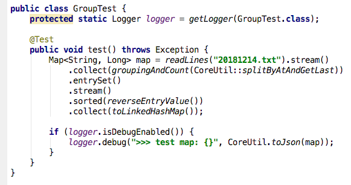

20181213
20181212
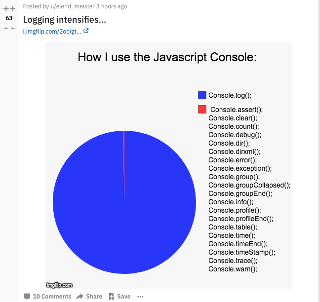
20181211
org.apache.catalina.connector.Response.addCookie

20181210

20181209
20181208
SecurityContextPersistenceFilter
SecurityContextRepository
20181207
20181206
20181205
20181204
20181130
20181128

20181127
20181126
20181125
Is this the flight to London?
Do you have some snacks?
I have nothing to declare.
Where is the baggage claim?
What's the purpose of your visit?
I'm here to travel.
How long are you going to stay?
I plan to stay for 4 days.
Hello, I'd like to check in please.
I have a reservation.
I made a reservation.
Please fill out this check-in form.
How long will you be staying?
For 3 nights.
I'm going to check out on February, 19th.
Can we have twin beds?
Can we have a double bed?
What is the phone number for the front desk?
What is the phone number for the room service?
This is Room #805, Id like a 7:00 wake-up call please.
https://www.youtube.com/watch?v=UIS_o4GeJYs
I like to have a table for 2 please.
What would you like to drink?
Tab water, Bottle water.
Can you give us some minutes?
Are you ready to order?
May I take your order?
Oh, I haven't decided yet.
I'm ready to order.
So, What's good here?
Do you have any recommendations?
I'll have it.
I'll try it.
What's the different between this pasta and that pasta?
What does it come with?
Does this have oyster in it?
Does this have coriander in it?
How would you like your steak cooked?
Is this enough for us?
Can we get some more bread?
Do you have any hot sauce?
That's for me.
That's for her.
I've got the pasta.
Is everything all right?
https://www.youtube.com/watch?v=NFsyEggrO0k
https://stackoverflow.com/questions/42332906/squash-git-commits-non-interactively-with-git-rebase
20181124
Aren't you going to get that?
Aren't you going to answer that?
Aren't you going to pick up that?
It's OK. Go ahead, answer it.
Could you hold on a second?
Could you hold on a minute?
I'm sorry but I need to take this.
I'm sorry but I really need to make a phone call.
Yeah, go ahead. Take your time.
That was my uncle.
Are you clsed with your uncle?
Ever since my father passed away, he has been calling me from time to time.
every now and then.
We're not that close, I talk to my uncle on the phone once or twice a week.
https://www.youtube.com/watch?v=UzTDuTxo5f8
20181123
Believe it or not, when it comes to meeting men, I am shy.
When it comes to you, love, I would never stop fighting.
When it come to discipline, sometimes, you must be creative.
You can never be too cautious, when it comes to love.
Because I am a winner, when it comes to successful relationships.
When it comes to survival, I'd kill my own son.
But when it comes to the heavy lifting, I am done.
When it comes to my son's best interests, I am not afraid of being the villain.
But I have a soft heart, when it comes to family reunions.
When it comes to getting what he wants, Markos doesn't have much of a sense of humor.
When it comes to parenting, I am much more comfortable playing the good cop.
This school has a zero tolerance policy when it comes to profanity.
You don't get to insist on anything when it comes to my daughters.
I am a vital woman with passion and a library of knowledge when it comes to this industry.
Really? The blue seems a little safe, Safe is good, when it comes to the judges.
When it comes to love, what does age matter?
I did, but I can't trust him when it comes to you.
I think it's very clear from this book that when it comes to me, you do not have good judgement.
Your mother has got a 6th sense, especially when it comes to buying her presents.
Klaus can't control me, not when it comes to you.
Trust me, when it comes to psychology, I know what I'm talking about.
Because when it comes to the law, there is a fairly large divide between not exactly and no.
You seem so rational when it comes to your daughter's safety.
When it comes to Mike, there is no one you won't betray.
We can cut corners all you want, but I am not going to skimp when it comes to my dog.
You Salvatores are truly pathetic when ti comes to women.
Okay, It's just when it comes to food, I have certain rules.
https://youtrack.jetbrains.com/issue/IDEA-85434
20181122
You look like a model today.
You look like you know what you are doing.
You look so smart in that suit!
You look like you've got a cold.
He looks like a great father.
She looks so happy today.
You look so tired today.
You look like you are tired today.
She look so bored now.
She look like she's so bored now.
You look like you need to drink water.
Susan looks so confident today. She must have practice a lot.
Susan looks like she's so confident today.
I didn't sleep well last night. Do I look like zombie today?
Bring it to me.
Take it away from me.
Excuse me?
How may I help you?
Could you bring me some more parmesan cheese, please?
Are you still home?
Yeah, what's up?
My phone is dying.
Oh, okay. I'm about to leave, so I will bring you the charger.
Michelle, we were thinking of bringing wine.
Yeah sure. A red is fine.
Great!
Can you take Kate to school tomorrow?
Sure. Are you gonna do something tomorrow morning?
Yeah, I need to have a meeting with my team.
Mom, I'm going to take Sarah to her home. I'll be back soon.
Okay, safe driving. It's raining outside.
How are you?
I'm good, thanks. Can you take me to JKF, please?
Sure, Which terminal?
Terminal 2, please.
I almost made it!
You nearly had it.
I almost had it!
You were so close!
That was so close.
What a waste!
What a waste of good food.
What a waste of time.
What a waste of energy.
That was perfectly good cake!
It's nice to meet you.
It's nice to meet you again!
Good to see you again!
It was good seeing you.
It was nice to see you again!
I happen to have some cash on me right now.
I happen to have a really good idea.
I happened to have some left-over pizza from yesterday in my refrigerator.
It just so happens that I have some cash on me.
It just so happens that I have a really good idea.
It just so happens that I have some left-over pizza from yesterday in my refrigerator.
Do you have some cash?
Do you happen to have some cash on you right now?
Do you happen to know where I could get something like this?
Do you happen to have something to eat?
Do you by any chance have something to eat right now?
Do you have some cash on you by any chance?
Do you by any chance have some cash on you right now?
I happen to know someone who is planning to go to Australia soon.
It just so happens that I know someone who is planning to go to Australia soon.
Do you happen to know anyone who is planning to go aboard soon?
Do you happen to know who is planning to go on a trip overseas soon?
Array size is not a small enough positive integer.
20181121
all week
all this week
this week
last week
next week
this weekend
on weekdays
I just stay home on weekends.
I usually hang out with my friends on weekends.
This morning, a bird flew into my apartment.
this weekend, my friends are coming over to my apartment.
Last weekend, I went over to my friend's apartment.
I went over to his place last weekend.
Last weekend, I went over to my friend's place.
He, let's hang out at my place.
Hey let's go over to Susan's place and hang out there.
apartment complex
I'm going to go home.
I got back home late yesterday.
I thinking I should get back home now.
What time are you getting back home today.
go on a diet.
I'm going to go on a diet from next week.
I'm on a diet now.
I was on a diet unitl last week.
Are you on a diet now?
How long have you been on a diet?
gain weight.
lose eight.
I want to lose weight.
I've lost 2kg so far.
Wow, you've lost a lot of weight.
https://www.youtube.com/watch?v=9AVb-jN22kk
She lives in Seoul.
He has a lot of friends.
The company manufactures cars.
I'm talking several courses in school.
There are a couple of coffee shops in my neighborhood.
I have 2 tests this week.
I was confused.
I was frustrated.
I was really excited.
I was surprised.
I was amazed.
It was confusing.
It was frustrating.
It was exciting.
It was surprising.
It was amazing.
What did you do on the weekend?
I just watched TV.
I don't know why there are so many people there.
I understand how you feel.
I understand why she did that but I don't agree with her decision.
I don't understand what it means.
I found out about that just yesterday.
I figured out how to use it.
I figured out how to get there.
I figured out how set up the alarm.
I finally realized what the problem was.
I saw my friend at school today and I noticed that she had gotten a haircut.
She came out with a new album, and I noticed that her style had changed a little bit.
I ran into my friend on the street this morning, and I noticed she looked a little different.
I noticed you were drinking a lot of coffee today, did you have trouble sleeping last night?
This morning, someone said hello to me on the street, but I didn't recognize him.
She looked very familiar, but I couldn't recognize her.
If you saw your boyfriend's handwriting, would you recognize it?
I wasn't aware of that policy.
There were aware of the rules.
We were aware of the rules.
They were not aware of the situation at the time.
I know him well.
I'm not very familiar with this topic.
Are you familiar with this kind of situation?
I can't tell what it says.
I can't tell the difference!
Can you tell what this is?
Do you think it's water?
Where did he go?
He has a crush on her.
She had no interest in him.
Her mom told her to stop talking to him.
I couldn't have done it without you.
There's nothing we can do.
There's nothing else we can do about it.
There's nothing more we can do about at this point.
There was nothing we could do at that point.
At that point, there was nothing we could do.
At this point, there's nothing we can do.
There's nothing we can do but just wait.
There's nothing else we can do at this point except wait.
count me in.
Sure, you got it, great, count me in.
It sounds like a plan, count me in.
Then, you know, count me in, right?
I am feeling much better, so count me in.
I would be more than happy to go with you.
count me in.
I'll sit with you.
Oh, I'm so touched, I could cry.
I'm so touched, you're all willing to do this.
Bite the bullet, go on the date!
Bite the bullet and bitch!
You might have to bite the bullet and ask her for her recipe!
Maybe we should just bite the bullet and go to Boston.
Well, then, you have no choice.
Bite the bullet and bitch!
She gave me the green light.
Transplant committee gave us a green light.
You got a green light.
They're not going to green light the show without you in it.
I'm so flattered.
I'm very flattered but, uh, I'm engaged.
Thanks for asking, though. I'm super flattered.
I'm really flattered but, I'm seeing somebody.
thanks for asking.
How are you doing?
I'm still humiliated. Thanks for asking.
I'm fine, by the way, thanks for asking.
Well, I'm doing great. Thanks for asking.
Uh, it was fabulous. Thanks for asking.
What are friends for?
Oh, you guys are angels for doing this.
Well, what are friends for?
Make a wish!
you want me to make a wish?
Hey, sweetie, now, don't forget to make a wish?
Happy birthday, Come on, blow out your candles.
starting tomorrow, I'm officially a student here.
But things will be be better soon, I promise.
Obviously, starting tomorrow.
starting tomorrow, you're going to start caring about some things, okay?
And if you have a plan, you should stick to it.
You made me a promise, you need to stick to it.
We made our decision, Let's jsut stick to it.
Just make a decision and stick to it.
Make a schedule for child-care responsibilities and stick to it.
I think it's best that we just make a plan and stick to it.
I'll make up a schedule and make sure you stick to it.
Can you change this $50 to 3 tens, 2 fives and 10 ones, please?
Can you break this bill?
Can you change this twenty dollar bill into a ten, a five, and five ones?
Can you change this ten dollar to ones?
Can I have change in ones for a ten dollars bill?
Can you change one dollar bill into quarters?
A: Do you need an help?
B: Yes, please. Can you change this ten dollar to ones?
A: I can give you one five and five ones. is that okay?
B: Sure, thanks.
Do you have the change for a five dollars bill?
I need small change.
I'd like change for a twenty.
Can you change this bill into coins, please?
Can I have some change for this?
Let me have nine ones and some change, please.
Give me the whole amount in twenty dollar bills.
20181120
I'm a little sad that you couldn't make it to my party.
My mom felt a little sad when I graduated.
Mina was a little disappointed that her friend went back to America.
I'm a little disappointed that summer is already over.
I have the back-to-school blues.
It's normal to get the back-to-school blues.
I've never had the back-to-school blue. I love school!
https://www.youtube.com/watch?v=oJnmfsbfx_o
We just made use of what we had and it turned out OK.
You have to make good use of your time.
The deadline is next week so we have to make good use of our time.
We have to make the most out of this opportunity.
Let's try to make the most out of this opportunity.
Come on, we only have an hour left.
So, let's make the most out of it.
https://www.youtube.com/watch?v=smY6zmUOKVs
How are you today?
How are you doing?
I'm okay.
I'm alright.
I'm doing okay.
I'm doing alight.
What's the matter?
What's wrong?
The movie was so-so.
The service is really good, but the food is so-so
I thought the movie would be fun, but it was so-so.
It's not terrible, but it's not great. It's so-so
Her performance was so-so.
How are you today?
Hey, I'm alright.
Alright? what's wrong?
I had a hard math test today.
Oh, how do you think you did?
I think I did so-so.
Don't stress too much.
Next time I can help you study.
Thanks pal!
https://www.youtube.com/watch?v=nqUGuPLHvyE
Let's put off our dinner plans.
Would it be alright if we put off the trip?
Let's just put it off until tomorrow.
Don't put off until tomorrow what you can do today.
https://www.youtube.com/watch?v=Mox4mIynHqk
I know what you're going to say!
Take care not to catch a cold.
Always the same thing! Bye.
Be careful not to catch a cold.
Watch out for the cold.
Don't catch a cold.
Bundle up!
Bundle up before you go outside.
Stay warm.
Bundle up and stay warm.
Dress warm!
https://www.youtube.com/watch?v=8u5Nwhudz1o
I think I lost my wallet.
Don't panic!
You dropped it in the bathroom and here it is.
I have a good sense of humor.
That person has no sense of humor.
He has terrible sense of humor.
I have no sense of direction. I alwasy get lost.
My brother has a bad sense of direction.
His sense of direction is so bad.
He can't even find his own house.
My best friend has no sense of time.
I have a really good sense of time.
Having a good sense of time is important.
https://www.youtube.com/watch?v=j3xwsa4RzDk
Here you are! I made it just for you.
Oh really? Wow! Thanks you.
Is the food okay?
Is the food alright?
I hope the food is alright?
I hope it's not too bad.
I hope it's not too terrible.
What are you doing this weekend?
I'm going to watch that movie "Cat Man".
Was it worth it?
It wasn't worth it.
Is that movie worth watching?
That place isn't worth visiting.
I hope this video was worth watching.
https://www.youtube.com/watch?v=PZgaOyv06aQ
Hey, Did you like that movie?
Yeah, It was little sad, but I liked it.
It must have been hard to understand though.
I roughly understood it.
To get the gist of something.
I got the gist of it.
I get the gist of what you're saying
My Korean isn't perfect, but I got the gist of what the drama was about.
Crystal clear.
The instruction were crystal clear to me.
She gave me crystal clear directions.
His explanation was crystal clear.
I understand exactly what they said. It was crsytal clear.
https://www.youtube.com/watch?v=DWGP5buoB2s
20181119
https://www.youtube.com/watch?v=GTCR0fNEyms
Hey! Are you okay?
I almost got hit by a car a few seconds ago.
Really?
Yeah. It barely missed me!
I am okay though.
I'm glad you're okay.
I'm glad you could make it to my party.
I'm glad you called me.
I'm glad you came over.
I'm glad you care about me.
That's what I friends are for.
What a relief!
Wow! It's such a relief to hear that!
It's such a relief to know that you're okay.
Thanks goodness!
I thought you were lost.
Thank God! I thought I lost my phone!
Excuse me. Is this seat taken?
Sorry to bother you, but is this seat taken?
This seat is taken.
It's taken.
Yeah. My friend is sitting there.
Can you save my seat?
I'll save you a seat if I get there first. Don't worry?
Would you mind saving my seat while I run to the bathroom?
Don't worry. I saved your a seat.
https://okky.kr/article/522880
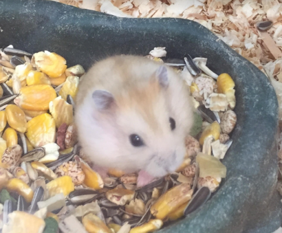
20181118
Where is here?
Where am I?
Where are we?
Here is Busan.
This is Busan.
I like here.
I like it here.
I like it there.
https://www.youtube.com/watch?v=NK8njFpsOzw
I live in Seoul.
I'm living in Seoul.
I'm currently living in Seoul.
I'm living in Seoul right now.
I'm living in Seoul for the time being.
https://www.youtube.com/watch?v=SskzBYfJm-U&t=29s
That's when I decided to study English.
That's when I called my mom.
At that time, I knew nothing about Korea.
Back then, I knew nothing about Korea.
Back then, I didn't like kimchi.
I didn't have my phone with me at the time.
It seemed like a good idea at the time.
https://www.youtube.com/watch?v=-q96mpw7kN0
20181117
20181116
Pop the trunk, will you?
If you pop the trunk, I'll get your bags.
He told me to pop the trunk and then start driving.
Too much pressure to pop the trunk open.
Pop the trunk!
you guys can't go in there.
Yes, we can, pop it.
I found the same lipstick on the German's rearview mirror.
Blood and hair on the rearview mirror.
Now if I see cops in my rearview mirror, your daughter dies.
When I dream, I keep seeing Andrew's face in that rearview mirror.
it's in my rearview mirror.
I'm not going back, I'm done.
You should have relationship rearview mirror.
Relationships may appear closer than they actually are.
He flew through the windshield.
Skull is cracked.
They said he went through the windshield.
This guy hits the windshield but dies of drowning?
I'm going to go find that guy's car and leave a note on the windshield.
But the victim only hit the windshield.
And he put his head through a windshield.
And then puts Callie through a windshield.
I just, um, had a flat tire.
You know, maybe they're late, may they got a flat tire.
My dad said it was a flat tire.
Is everything okay?
Oh, oh, I'm fine.
I just, um, had a flat tire.
Is everything okay?
Yeah, yeah, She's having a little car trouble.
Not serious, is it?
No, just a flat tire.
Go back to bed, sweetheart.
But she said she need a jump start.
I thought maybe those guys could jump start him,
you know, bring him back.
Did you catch a license plate?
I don't know his license plate.
What about the license plate?
Can you zoom in on the license plate?
So, I got this license plate number for you.
BMW 740, 2000 to 2003, containing the license plate number 7183.
The license plate number is KP9190.
phonetic code.
It's a silver Chevy, license plate OB2~.
20181115
Phuket
Krabi
There is 3 bedrooms, a gourmet kitchen.
perhaps enjoying a gourmet meal from our kitchen.
She's going to have designer cloths, gourmet food.
It did win me the blue ribbon at the gourmet country cook-off.
My cooking is not good.
Well, my parents won't be expecting a gourmet meal.
How do you feel about ballet?
I used to take ballet, and I was pretty good at it, too.
and one time, this instructor from a big ballet company saw me perform.
He is anxious because his ballet company is doing Swan Lake this spring.
It's not the ballet, ladies, Let's move, Let's move.
I've got to cancel on the ballet tonight.
She is big supporter of the ballet.
The first time I actually felt like saying it was the night
He took me to the ballet and he hates the ballet.
I didn't go to the buffet.
I had buffet.
It's a buffet. There is no rush.
The buffet is open.
The place has the best buffet in town.
Why not oversee the remodel of our new ski chalet?
I know it may not compare to, uh, a suite at the Ritz in Paris or a Chalet in Aspen.
I have le Big Mac, and le Filet de Fish.
Not the filet mignon, What comes with that?
That was a 10-ounce filet.
I've been marinating it for 3 days.
Chevrolet = Chevy
Britan Chevrolet
This is the 2019 Chevrolet Malibu RS.
Let's check out the exterior on this new 2019 Chevy Camaro SS 1LE.
Today, we have the 2019 Chevy Camaro.
This is the SS model.
The Hard Rock Cafe?
Pauls' Cafe.
I was taken from a cafe, in front of my children.
I don't where you are.
I'm at the Luna Park Cafe.
Just meet me out front.
They had brunch this morning at the Blue Marine Cafe.
Well, the waiter at the Blue Marine Cafe seemed to think you were fighting.
20181114
20181113
I'm booked solid today.
And you're booked solid all next week.
We're actually booked solid for the next 2 months.
We're running out of time.
Well, we're running out of evidence.
I'm running out of money.
They were running out of air.
Especially, now that we're running out of sand.
We're running ouf of instruments.
I'm running out of ideas.
We're running out of options.
I'm running out of places I can touch him.
We were standing there when someone came running out of the bathroom.
I forgot about that.
Oh, I totally forgot about that.
Oh, god, I almost forgot about that.
ring a bell?
Does that ring a bell?
No, It doesn't ring a bell.
Do you recognize this gentleman?
The name doesn't ring a bell.
No, that name doesn't ring a bell.
rain check?
rain check on that waffle?
rain check on lunch?
rain check for tomorrow?
I got to go. rain check?
Oh, I forgot, I'm sorry. rain check?
Hi, I was just about to go out. rain check?
I get it. Another time?, Rain check?
How about a rain check?
Can I take a rain check?
Listen, I'm going to need to take a rain check.
But, I'm going to need you to take a rain check.
I'm going to need a rain check.
Do you mind if I take a rain check?
Would you mind if I took a rain check?
I'll take another rain check.
If you don't mind taking a rain check on our dog walk.
Can we do a rain check?
Sadly, I've got to take a rain check.
How about we take a rain check?
This is an awfully long rain check.
Fine, I'll take another rain check.
You're starting to owe me a lot of rain, you know?
https://www.youtube.com/watch?v=KNQxwvjcscc
20181112
Here we are, Like it was meant to be.
It was like it was meant to be.
Maybe, you two aren't meant to be together.
This is meant to be.
If it's meant to be, it's meant to be.
I'm meant to be alone.
Well, it wasn't meant to be.
You're meant be in bed.
I've forgotten this world is meant to be enjoyed.
Some mountains are just meant to be climbed.
Maybe, it was never meant to be opened from the outside.
Yeah, well, deals were meant to be renegotiated.
https://www.youtube.com/watch?v=meUQ4Y7zlQI
So, let me get this straight.
Not that I'm aware of.
Is she allergic to any medications?
I'm allergic to peanuts.
Are you allergic to something you ate?
What kind of person is allergic to lobster?
What are you allergic to?
You aren't allergic to anything, are you?
Are you sure about this?
Bring it on!
Don't get me wrong.
Why would I do that?
He stood me up, remember?
What happened to your date?
Are you thinking what I'm thinking?
Here is what I'm thinking
https://www.youtube.com/watch?v=YSwoPRuhq3M
20181109
20181108
20181107
EOT : Embedded Open Type
OTF : Open Type Font
WOFF : Web Open Font Format
SVG : Scalable Vector Graphics
20181106
It was only a matter of time before you figured out how.
She will die, it's only a matter of time.
Are you insane?
Are you crazy?
Are you out of your mind?
Don't do this to me.
You can't do this to me.
How could you do this to me?
Don't take this the wrong way.
I hope you don't take this the wrong way.
And look, I don't want you to take this the wrong way.
I should get going.
I'm done here.
I'm get to it, as soon as I'm done here. 어순어잠
Oh, my god. You know something. Spill it.
I'm on your side.
Everyone here is on your side.
You know, I'm 100% on your side but,
Whose side are you on? 싸려온
https://jsonplaceholder.typicode.com/
https://www.infoq.com/articles/Servlet-and-Reactive-Stacks-Spring-Framework-5
20181105
20181104
Smart Phonics
Single Letter Sounds
Short Vowels
Long Vowels
Double Letter Consonants
Double Letter Vowels
20181103
20181102
keep it to yourself.
Long story short.
Look who is here.
Where were we.
Can I have your attention?
Is that it?
I'm crazy about you.
In the ballpark.
We're almost there.
20181101
20181031
https://www.youtube.com/watch?v=w2SVTACT0OQ
I've heard a lot about you.
압허러바우츄
You're getting the hang of it.
유아게링더행오빗
In my defense, ...
인마디펜스
In the meantime, ...
인더민타임
Knock it off.
Would you knock it off?
낙잇오프
On second thought, ...
온세컨쏱
Just in case.
I had it with me, just in case.
져스틴케이스
Just in time.
져스인타임
Cut the crap.
컷더크랩
You scared the crap out of me.
유스캐더크랩아오브미
Nadia: The Secret of Blue Water - Neo Atlantis


20181030
java.lang.Exception
at loadContext(CookieSecurityContextRepository.java:69)
at org.springframework.security.web.context.SecurityContextPersistenceFilter.doFilter(SecurityContextPersistenceFilter.java:82)
at org.springframework.security.web.FilterChainProxy$VirtualFilterChain.doFilter(FilterChainProxy.java:342)
at org.springframework.security.web.FilterChainProxy.doFilterInternal(FilterChainProxy.java:192)
at org.springframework.security.web.FilterChainProxy.doFilter(FilterChainProxy.java:160)
at org.springframework.web.filter.DelegatingFilterProxy.invokeDelegate(DelegatingFilterProxy.java:344)
at org.springframework.web.filter.DelegatingFilterProxy.doFilter(DelegatingFilterProxy.java:261)
at org.apache.catalina.core.ApplicationFilterChain.internalDoFilter(ApplicationFilterChain.java:241)
at org.apache.catalina.core.ApplicationFilterChain.doFilter(ApplicationFilterChain.java:208)
at org.apache.catalina.core.StandardWrapperValve.invoke(StandardWrapperValve.java:219)
at org.apache.catalina.core.StandardContextValve.invoke(StandardContextValve.java:110)
at org.apache.catalina.authenticator.AuthenticatorBase.invoke(AuthenticatorBase.java:506)
at org.apache.catalina.core.StandardHostValve.invoke(StandardHostValve.java:169)
at org.apache.catalina.valves.ErrorReportValve.invoke(ErrorReportValve.java:103)
at org.apache.catalina.valves.AccessLogValve.invoke(AccessLogValve.java:962)
at org.apache.catalina.core.StandardEngineValve.invoke(StandardEngineValve.java:116)
at org.apache.catalina.connector.CoyoteAdapter.service(CoyoteAdapter.java:445)
at org.apache.coyote.http11.AbstractHttp11Processor.process(AbstractHttp11Processor.java:1115)
at org.apache.coyote.AbstractProtocol$AbstractConnectionHandler.process(AbstractProtocol.java:637)
at org.apache.tomcat.util.net.JIoEndpoint$SocketProcessor.run(JIoEndpoint.java:316)
at java.util.concurrent.ThreadPoolExecutor.runWorker(ThreadPoolExecutor.java:1142)
at java.util.concurrent.ThreadPoolExecutor$Worker.run(ThreadPoolExecutor.java:617)
at org.apache.tomcat.util.threads.TaskThread$WrappingRunnable.run(TaskThread.java:61)
20181028
https://www.youtube.com/watch?v=7nlPUWUW93w
20181026
http://gall.dcinside.com/board/view/?id=programming&no=889650
20181025
https://blogs.oracle.com/java-platform-group/building-jdk-11-together
20181024
20181023

20181022
20181020
20181019
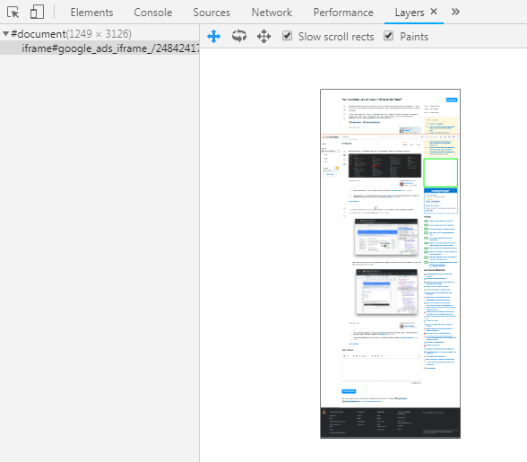
20181018
20181017
 https://www.thoughtco.com/facts-about-cells-373372
https://www.thoughtco.com/facts-about-cells-373372
20181016
https://blog.takipi.com/the-ultimate-json-library-json-simple-vs-gson-vs-jackson-vs-json/
20181015
http://ywpop.tistory.com/3204
Fetched SqlSession [org.apache.ibatis.session.defaults.DefaultSqlSession@5e6159a3] from current transaction
20181014
20181013

20181012
20181011
20181010
20181009
20181008
피어나 - Lucia(심규선)

20181007
20181006
20181005
20181004
20181003
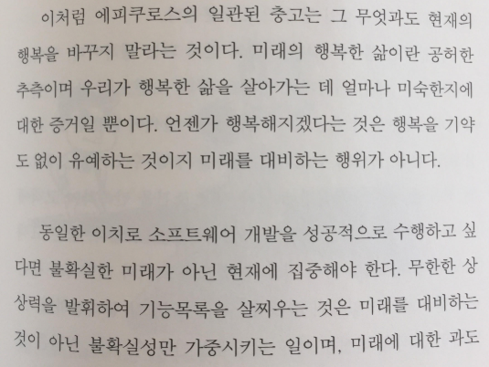
20181001
solar halo
http://strangesounds.org/2016/02/nature-powerful-solar-halo-phenomenon-germany.html
20180930

20180929
20180928
20180927
http://www.ddanzi.com/ddanziNews/506527127
GenericHttpMessageConverter - Gson
GenericHttpMessageConverter - Jackson
20180926
20180925
20180924
git reflog --date=iso
git reset --hard 8794ecd
git commit --amend --date="now"
20180923
20180922
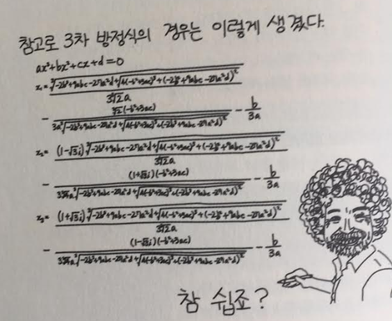
20180921
20180920
flatpickr
20180916

20180914
Async
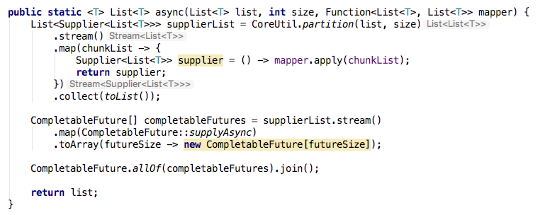
20180913
Fern lifecycle
20180911
https://www.youtube.com/watch?v=1-0cD9thTIA
20180910
https://www.youtube.com/watch?v=KjsyLRm6-1M
go time format
20180909
ambigous selector file.Name
관계의 물리학
20180908
20180906
한글라이즈
https://www.slideshare.net/sublee/ss-113085659
20180905
GTK
20180904
gorm
http://gorm.io/
newTypeEncoder
20180903
https://blog.usejournal.com/top-6-web-frameworks-for-go-as-of-2017-23270e059c4b
20180901
slice
https://www.youtube.com/watch?v=Dpn9kWENE2g
20180831
echo
fatal error: all goroutines are asleep - deadlock!
go keyword
20180830
Sentry
20180829
Closure, Stateful filter, Higher-order function
https://stackoverflow.com/questions/27870136/java-lambda-stream-distinct-on-arbitrary-key
 디세즈 배래즛 겟츠
이즈 나래즈 배래즛 룩스
디세즈 배래즛 겟츠
이즈 나래즈 배래즛 룩스
Code Tutorial
온갖종류
https://blog.naver.com/neo_turing/221348031702
20180828
Go Error Handling
 http://pyrasis.com/book/GoForTheReallyImpatient/Unit60
http://pyrasis.com/book/GoForTheReallyImpatient/Unit60
20180823
20180821
wrk - a HTTP benchmarking tool
https://github.com/wg/wrk
20180820
Σ(°д°;)
20180819
20180818
20180816

20180815
20180814

20180813
https://medium.com/criciumadev/its-time-migrating-to-java-11-5eb3868354f9
20180812
Detroit: Become Huamn
20180811
20180809
https://brunch.co.kr/@supims/17
20180807
20180805
20180804
https://brunch.co.kr/@dalda/206
20180803
Spring
 https://medium.com/vingle-tech-blog/serverless%EC%99%80-%EA%B8%B0%EC%88%A0%EB%8F%84%EC%9E%85-backend-application%EC%9D%98-%EB%AF%B8%EB%9E%98-8f114a8b00d5
https://medium.com/vingle-tech-blog/serverless%EC%99%80-%EA%B8%B0%EC%88%A0%EB%8F%84%EC%9E%85-backend-application%EC%9D%98-%EB%AF%B8%EB%9E%98-8f114a8b00d5
20180801
20180731
Windows 10
20180729
20180728
Did you ever
디쥬에버
쥬버
커잠
20180727
git-quick-stats
https://github.com/arzzen/git-quick-stats
Intellij Lambda type hint?
20180726
Web Architecture
https://engineering.videoblocks.com/web-architecture-101-a3224e126947
Zeplin
Reddit
4K Relaxation Channel
https://www.youtube.com/channel/UCg72Hd6UZAgPBAUZplnmPMQ
쉬운 코드를 만들자.
20180725
getSubTypesOf
Breakpoints
resouceLoader
20180724
George Michael - Careless Whisper


Zeplin
Proxy
20180723
Java Type
Twitter OAuth
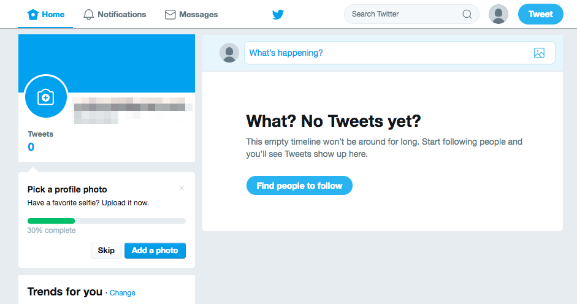
20180722
20180721
20180720
SecurityContextPersistenceFilter
20180719
20180718
20180717
20180716
Galaxy 8
20180715
https://9gag.com/gag/a0KzERn
20180714
20180711
20180708
https://www.youtube.com/watch?v=I-Y14gm8C6o
20180707
20180706
https://mdbootstrap.com/javascript/carousel/
groupingBy
20180705
GraphQLConfiguration
20180704
20180703
@Batched
20180702
Code First
20180701
spqr
20180630
https://developer.github.com/v4/explorer/
swagger
graphql
https://www.codenotfound.com/graphql-java-spring-boot-example.html
https://medium.com/@iguissouma/rapid-development-of-simple-crud-graphql-apis-in-java-and-spring-boot-bafc4e8d387a
20180629
https://graphql-kr.github.io/
20180628
http://graphql-java.readthedocs.io/en/latest/index.html
Apollo
GraphQL
20180627
Configuration
20180626
철학질문
Who am I?
How to live?
How to die?
내 인격의 공간?
어려움
코드 읽기
구조 파악하기
테스트 하기
Blue/Green
https://container-solutions.com/kubernetes-deployment-strategies/
OOP
interface Feature1 {
}
interface Feature2 {
}
class FeatureA implements Feature1, Feature2 {
}
Annotation/Aspect
@interface Feature1 {
}
@interface Feature2 {
}
@Feature1
@Feature2
class FeatureA {
}
Builder/Composite
class Feature1 {
}
class Feature2 {
}
class FeatureA {
Feature1 feature1;
Feature2 feature2;
}
https://github.com/uuidcode/oop
20180623
20180622
20180621
Redis and @Cacheable
20180620

fill
20180619
QuerydslPredicate
http://www.baeldung.com/rest-api-search-querydsl-web-in-spring-data-jpa
addArgumentResolvers
SimpleJpaRepository.getOne
2018-06-19 10:52:52,270 DEBUG: com.github.uuidcode.querydsl.test.service.UserService2Test.test(UserService2Test.java:61) >>> test user: "com.github.uuidcode.querydsl.test.entity.User_$$_jvst11f_0"
2018-06-19 10:52:52,270 DEBUG: com.github.uuidcode.querydsl.test.service.UserService2Test.test(UserService2Test.java:62) >>> test user: "javassist.util.proxy.MethodHandler"
2018-06-19 10:52:52,274 DEBUG: com.github.uuidcode.querydsl.test.service.UserService2Test.test(UserService2Test.java:63) >>> test user: {
"handler": {
"interfaces": [
"org.hibernate.proxy.HibernateProxy"
],
"constructed": true,
"overridesEquals": false,
"entityName": "com.github.uuidcode.querydsl.test.entity.User",
"id": 6,
"initialized": false,
"readOnly": false,
"unwrap": false,
"allowLoadOutsideTransaction": false
},
"accountNonExpired": false,
"accountNonLocked": false,
"credentialsNonExpired": false,
"enabled": false,
"userAuthorityList": [],
"bookList": []
}
20180618
추상화하지 말라.
상속 계층을 만들지 말라
안 쓰는 코드와 파일을 삭제하라.
적정 기술을 사용하라.
동일 목적의 프레임워크/라이브러리를 여러 개 쓰지 말라.
https://medium.com/steady-study/%EC%A0%95%EB%A6%AC-%ED%94%84%EB%A1%9C%EA%B7%B8%EB%9E%98%EB%A8%B8%EC%97%90%EA%B2%8C-%ED%95%84%EC%9A%94%ED%95%9C-%ED%94%BC%EB%93%9C%EB%B0%B1-%EA%B7%B8%EB%A6%AC%EA%B3%A0-quickanddirty-cada34da3646
Library Code VS Service Code
JPA + QueryDsl + mybatis
manualJoin
20180617

20180616
20180614
jooq
20180613
20180612
hibernate.hbm2ddl.auto
https://github.com/hibernate/hibernate-orm/blob/cd590470c0059981537e558a5ff6d114fd24df61/hibernate-core/src/main/java/org/hibernate/cfg/SettingsFactory.java#L352
20180611
UserService
20180609
@PreAuthorize

20180608
Template
20180607
git status && git checkout . && git clena -df
On branch master
Your branch is up-to-date with 'origin/master'.
nothing to commit, working directory clean
RememberMe
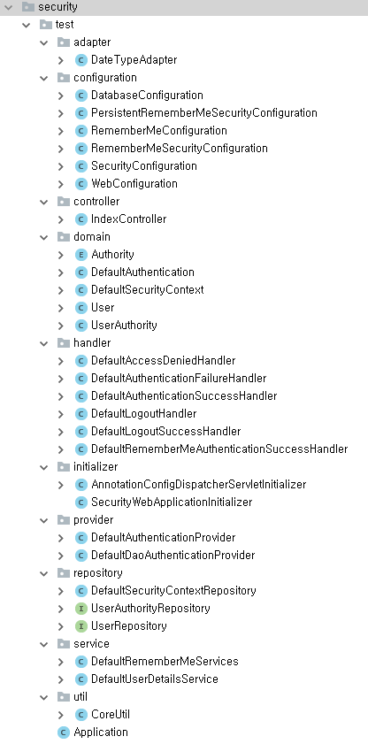
20180606
HttpSecurity
Spring Security
https://springbootdev.com/2017/08/23/spring-security-authentication-architecture/
20180605
Spring Security
SecurityContext
SecurityContextRepository
Authentication
AuthenticationProvider
GrantAuthority
AuthenticationManager
ProviderManager
DaoAuthenticationProvider
UserDetailsService
UserDetails
20180603
Spring Security
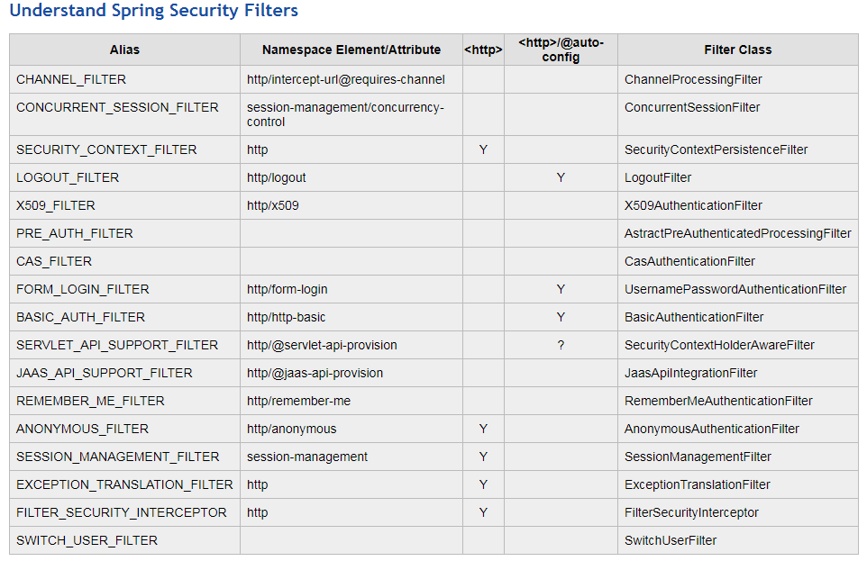
https://csns.calstatela.edu/wiki/content/cysun/notes/spring_security_filters
BTS (방탄소년단) 'Go Go (고민보다 Go)' Orchestral Cover

20180602
org.springframework.web.context.ContextLoader.properties
org.springframework.web.context.WebApplicationContext=org.springframework.web.context.support.XmlWebApplicationContext
SecurityNamespaceHandler
org.springframework.security.web.FilterChainProxy
HttpSecurityBeanDefinitionParser
unorderedFilterChain.addAll(httpBldr.getFilters());
unorderedFilterChain.addAll(authBldr.getFilters());
unorderedFilterChain.addAll(buildCustomFilterList(element, pc));
20180601

20180531
20180530
Kibana
20180529
Connection
DefaultSqlSession.getConnection()
SimpleExecutor.getTransaction()
SpringManagedTransaction.getConnection()
DataSourceUtils.getConnection()
ConnectionHolder.getConnection()
20180528
https://medium.freecodecamp.org/make-your-hobby-harder-programming-is-difficult-thats-why-you-should-learn-it-e4627aee41a1
20180526
Bean Initialization steps
AliasRegistry
Mybatis flow
https://terasolunaorg.github.io/guideline/5.0.2.RELEASE/en/ArchitectureInDetail/DataAccessMyBatis3.html

20180523
AbstractPlatformTransactionManager.suspend
TransactionSynchronizationManager
SqlSessionTemplate.getConnection()
DefaultSqlSession.getConnection()
SpringManagedTransaction.getConnection()
DataSourceUtils.getConnection(this.dataSource)
DataSourceUtils.doGetConnection(datasource)
ConnectionHolder conHolder = (ConnectionHolder)TransactionSynchronizationManager.getResource(dataSource);
if (conHolder == null) {
return dataSource.getConnection();
} else {
return conHolder.getConnection();
}
TransactionSynchronizationManager
Isolation Level
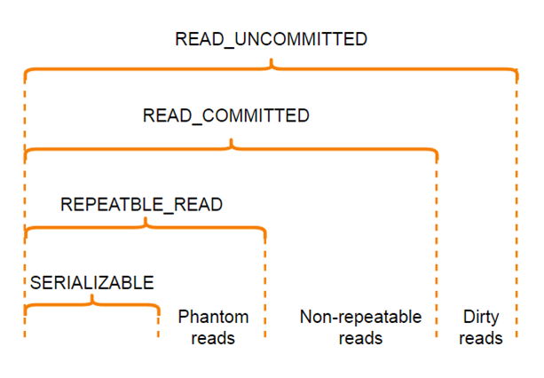
https://www.codeproject.com/Articles/1190420/Database-Transactions-with-Spring-Framework
20180522
20180520

20180519

20180517
20180515
http://likejazz.com/
 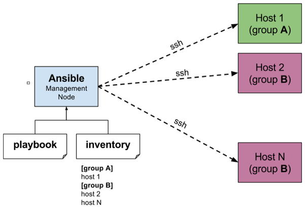
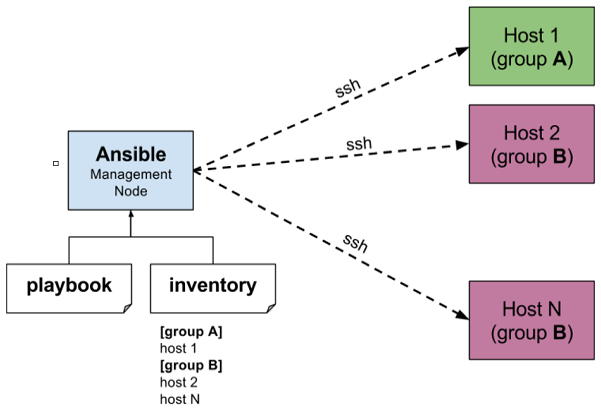
20180514
https://www.pinterest.com/pin/343047696607408417/
20180511
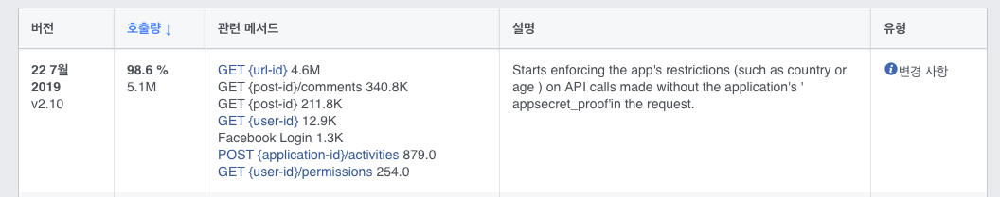
20180509
20180508
https://github.com/ImmobilienScout24/tomcat-stdout-accesslog/issues/2
20180505
음속: 340m/s
지구자전속도: 465m/s
20180504
20180503
proxy for docker
https://github.com/moby/moby/issues/32270
ID HOSTNAME STATUS AVAILABILITY MANAGER STATUS ENGINE VERSION
th94c2su7z1z2cpzn8liynte9 * core-01 Ready Active Leader 18.04.0-ce
5efhd1v0l2b7eodmc8fqsyzve core-02 Ready Active 18.04.0-ce
uzxn692yycjwfekrzl5u8sipq core-03 Ready Active 18.04.0-ce
20180502
maven:3.5-jdk-8
openjdk:8-jdk
buildpack-deps:stretch-scm
buildpack-deps:stretch-curl
debian:stretch
scratch
nginx:1.13
debian:stretch-slim
scratch
mysql/mysql-server:5.7
oraclelinux:7-slim
scratch
java.lang.RuntimeException: socket not found: /var/run/docker.sock
20180501
20180430
 {
"title": "altTab",
"rules": [
{
"description": "Alt+Tab to Cmd+Tab",
"manipulators": [
{
"type": "basic",
"from": {
"key_code": "tab",
"modifiers": {
"mandatory": ["left_option"],
"optional": ["any"]
}
},
"to": [{
"key_code": "tab",
"modifiers": ["left_control"]
}]
}
]
}
]
}
{
"title": "altTab",
"rules": [
{
"description": "Alt+Tab to Cmd+Tab",
"manipulators": [
{
"type": "basic",
"from": {
"key_code": "tab",
"modifiers": {
"mandatory": ["left_option"],
"optional": ["any"]
}
},
"to": [{
"key_code": "tab",
"modifiers": ["left_control"]
}]
}
]
}
]
}
20180428
[2018-04-27T22:24:02,328][WARN ][logstash.outputs.elasticsearch] Could not index event to Elasticsearch.
Rejecting mapping update to [XXXXX-2018.04] as the final mapping would have more than 1 type: [log, doc]
20180427
curl: (7) couldn't connect to host
curl: (56) Failure when receiving data from the peer
pipeline/output.go:92 Failed to publish events: write tcp 0.0.0.0:63654->1.1.1.1:15044:
write: connection reset by peer
20180426
20180425

20180424
20180423
 http://lng1982.tistory.com/301
https://bakyeono.net/post/2016-08-20-elasticsearch-querydsl-basic.htm
http://lng1982.tistory.com/301
https://bakyeono.net/post/2016-08-20-elasticsearch-querydsl-basic.htm
20180419
Caused by: java.lang.NoSuchMethodError: com.google.common.util.concurrent.MoreExecutors.directExecutor()Ljava/util/concurrent/Executor;
at org.elasticsearch.threadpool.ThreadPool.(ThreadPool.java:190)
at org.elasticsearch.client.transport.TransportClient$Builder.build(TransportClient.java:131)
at org.springframework.data.elasticsearch.client.TransportClientFactoryBean.buildClient(TransportClientFactoryBean.java:89)
at org.springframework.data.elasticsearch.client.TransportClientFactoryBean.afterPropertiesSet(TransportClientFactoryBean.java:85)
at org.springframework.beans.factory.support.AbstractAutowireCapableBeanFactory.invokeInitMethods(AbstractAutowireCapableBeanFactory.java:1637)
at org.springframework.beans.factory.support.AbstractAutowireCapableBeanFactory.initializeBean(AbstractAutowireCapableBeanFactory.java:1574)
... 329 more
20180418
ES6 Transport client가 ES2에 접속할때
NoNodeAvailableException[None of the configured nodes are available: [{#transport#-1}{yhVqYYJbSOSchn7NJw8FVw}{DOMAIN}{IP:9300}]
]
at org.elasticsearch.client.transport.TransportClientNodesService.ensureNodesAreAvailable(TransportClientNodesService.java:347)
at org.elasticsearch.client.transport.TransportClientNodesService.execute(TransportClientNodesService.java:245)
at org.elasticsearch.client.transport.TransportProxyClient.execute(TransportProxyClient.java:60)
at org.elasticsearch.client.transport.TransportClient.doExecute(TransportClient.java:371)
at org.elasticsearch.client.support.AbstractClient.execute(AbstractClient.java:405)
at org.elasticsearch.client.support.AbstractClient.execute(AbstractClient.java:394)
at org.elasticsearch.client.support.AbstractClient$ClusterAdmin.execute(AbstractClient.java:706)
at org.elasticsearch.action.ActionRequestBuilder.execute(ActionRequestBuilder.java:46)
at org.elasticsearch.action.ActionRequestBuilder.get(ActionRequestBuilder.java:53)
TransportSerializationException[Failed to deserialize response from handler [org.elasticsearch.transport.TransportService$ContextRestoreResponseHandler]
]; nested: IllegalArgumentException[Unknown NamedWriteable [org.elasticsearch.cluster.metadata.MetaData$Custom][ml]];
at org.elasticsearch.transport.TcpTransport.handleResponse(TcpTransport.java:1441)
at org.elasticsearch.transport.TcpTransport.messageReceived(TcpTransport.java:1400)
at org.elasticsearch.transport.netty4.Netty4MessageChannelHandler.channelRead(Netty4MessageChannelHandler.java:64)
at io.netty.channel.AbstractChannelHandlerContext.invokeChannelRead(AbstractChannelHandlerContext.java:362)
at io.netty.channel.AbstractChannelHandlerContext.invokeChannelRead(AbstractChannelHandlerContext.java:348)
at io.netty.channel.AbstractChannelHandlerContext.fireChannelRead(AbstractChannelHandlerContext.java:340)
at io.netty.handler.codec.ByteToMessageDecoder.fireChannelRead(ByteToMessageDecoder.java:310)
at io.netty.handler.codec.ByteToMessageDecoder.fireChannelRead(ByteToMessageDecoder.java:297)
at io.netty.handler.codec.ByteToMessageDecoder.callDecode(ByteToMessageDecoder.java:413)
at io.netty.handler.codec.ByteToMessageDecoder.channelRead(ByteToMessageDecoder.java:265)
at io.netty.channel.AbstractChannelHandlerContext.invokeChannelRead(AbstractChannelHandlerContext.java:362)
at io.netty.channel.AbstractChannelHandlerContext.invokeChannelRead(AbstractChannelHandlerContext.java:348)
Caused by: java.lang.NoClassDefFoundError: org/springframework/data/util/CloseableIterator
at java.lang.Class.getDeclaredMethods0(Native Method)
at java.lang.Class.privateGetDeclaredMethods(Class.java:2701)
at java.lang.Class.getDeclaredMethods(Class.java:1975)
at org.springframework.util.ReflectionUtils.getDeclaredMethods(ReflectionUtils.java:613)
at org.springframework.util.ReflectionUtils.doWithMethods(ReflectionUtils.java:524)
at org.springframework.util.ReflectionUtils.doWithMethods(ReflectionUtils.java:510)
at org.springframework.beans.factory.annotation.AutowiredAnnotationBeanPostProcessor.determineCandidateConstructors(AutowiredAnnotationBeanPostProcessor.java:247)
... 293 more
org.springframework.web.util.NestedServletException: Handler dispatch failed; nested exception is java.lang.NoSuchMethodError: org.springframework.util.Assert.isTrue(ZLjava/util/function/Supplier;)V
at org.springframework.web.servlet.DispatcherServlet.doDispatch(DispatcherServlet.java:982)
at org.springframework.web.servlet.DispatcherServlet.doService(DispatcherServlet.java:901)
at org.springframework.web.servlet.FrameworkServlet.processRequest(FrameworkServlet.java:970)
at org.springframework.web.servlet.FrameworkServlet.doPost(FrameworkServlet.java:872)
at javax.servlet.http.HttpServlet.service(HttpServlet.java:650)
at org.springframework.web.servlet.FrameworkServlet.service(FrameworkServlet.java:846)
at javax.servlet.http.HttpServlet.service(HttpServlet.java:731)
at org.apache.catalina.core.ApplicationFilterChain.internalDoFilter(ApplicationFilterChain.java:303)
at org.apache.catalina.core.ApplicationFilterChain.doFilter(ApplicationFilterChain.java:208)
at org.apache.tomcat.websocket.server.WsFilter.doFilter(WsFilter.java:52)
at org.apache.catalina.core.ApplicationFilterChain.internalDoFilter(ApplicationFilterChain.java:241)
at org.apache.catalina.core.ApplicationFilterChain.doFilter(ApplicationFilterChain.java:208)
at org.apache.catalina.filters.CorsFilter.handleSimpleCORS(CorsFilter.java:323)
at org.apache.catalina.filters.CorsFilter.doFilter(CorsFilter.java:165)
at org.apache.catalina.core.ApplicationFilterChain.internalDoFilter(ApplicationFilterChain.java:2
20180417
java.lang.Exception: No tests found matching Method getConcreteAllIndices(XXXX) from org.junit.internal.requests.ClassRequest@69a10787
at org.junit.internal.requests.FilterRequest.getRunner(FilterRequest.java:35)
at com.intellij.junit4.JUnit4IdeaTestRunner.startRunnerWithArgs(JUnit4IdeaTestRunner.java:49)
at com.intellij.rt.execution.junit.IdeaTestRunner$Repeater.startRunnerWithArgs(IdeaTestRunner.java:47)
at com.intellij.rt.execution.junit.JUnitStarter.prepareStreamsAndStart(JUnitStarter.java:242)
at com.intellij.rt.execution.junit.JUnitStarter.main(JUnitStarter.java:70)
sudo rm -fr /Library/Java/JavaVirtualMachines/jdk-9.jdk/
sudo rm -fr /Library/Internet\ Plug-Ins/JavaAppletPlugin.plugin
sudo rm -fr /Library/PreferencePanes/JavaControlPanel.prefPane
An annotation processor threw an uncaught exception.
Consult the following stack trace for details.
java.lang.NoSuchFieldError: pid
at lombok.javac.JavacAST.packageDeclaration(JavacAST.java:107)
at lombok.javac.JavacAST.(JavacAST.java:81)
at lombok.javac.JavacTransformer.transform(JavacTransformer.java:67)
at lombok.javac.apt.Processor.process(Processor.java:250)
at lombok.core.AnnotationProcessor$JavacDescriptor.process(AnnotationProcessor.java:115)
at lombok.core.AnnotationProcessor.process(AnnotationProcessor.java:165)
at lombok.launch.AnnotationProcessorHider$AnnotationProcessor.process(AnnotationProcessor.java:58)
at jdk.compiler/com.sun.tools.javac.processing.JavacProcessingEnvironment.callProcessor(JavacProcessingEnvironment.java:968)
at jdk.compiler/com.sun.tools.javac.processing.JavacProcessingEnvironment.discoverAndRunProcs(JavacProcessingEnvironment.java:884)
at jdk.compiler/com.sun.tools.javac.processing.JavacProcessingEnvironment.access$2200(JavacProcessingEnvironment.java:108)
20180416
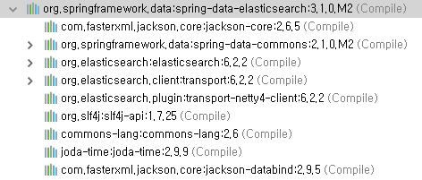
소프트웨어어서 골치아픈것
이름
버전
특수문자
엔코딩
java.lang.NoSuchMethodError: org.springframework.core.annotation.AnnotatedElementUtils.findMergedAnnotation(Ljava/lang/reflect/AnnotatedElement;Ljava/lang/Class;)Ljava/lang/annotation/Annotation;
at org.springframework.data.mapping.model.AnnotationBasedPersistentProperty.lambda$populateAnnotationCache$7(AnnotationBasedPersistentProperty.java:131)
at java.util.Optional.ifPresent(Optional.java:159)
at org.springframework.data.mapping.model.AnnotationBasedPersistentProperty.populateAnnotationCache(AnnotationBasedPersistentProperty.java:120)
at org.springframework.data.mapping.model.AnnotationBasedPersistentProperty.(AnnotationBasedPersistentProperty.java:88)
at org.springframework.data.elasticsearch.core.mapping.SimpleElasticsearchPersistentProperty.(SimpleElasticsearchPersistentProperty.java:48)
at org.springframework.data.elasticsearch.core.mapping.SimpleElasticsearchMappingContext.createPersistentProperty(SimpleElasticsearchMappingContext.java:51)
at org.springframework.data.elasticsearch.core.mapping.SimpleElasticsearchMappingContext.createPersistentProperty(SimpleElasticsearchMappingContext.java:33)
at org.springframework.data.mapping.context.AbstractMappingContext$PersistentPropertyCreator.createAndRegisterProperty(AbstractMappingContext.java:516)
at org.springframework.data.mapping.context.AbstractMappingContext$PersistentPropertyCreator.doWith(AbstractMappingContext.java:494)
at org.springframework.util.ReflectionUtils.doWithFields(ReflectionUtils.java:607)
Caused by: java.lang.AbstractMethodError
at org.springframework.beans.factory.support.FactoryBeanRegistrySupport.getObjectFromFactoryBean(FactoryBeanRegistrySupport.java:99)
at org.springframework.beans.factory.support.BeanDefinitionValueResolver.resolveInnerBean(BeanDefinitionValueResolver.java:279)
at org.springframework.beans.factory.support.BeanDefinitionValueResolver.resolveValueIfNecessary(BeanDefinitionValueResolver.java:129)
at org.springframework.beans.factory.support.AbstractAutowireCapableBeanFactory.applyPropertyValues(AbstractAutowireCapableBeanFactory.java:1471)
at org.springframework.beans.factory.support.AbstractAutowireCapableBeanFactory.populateBean(AbstractAutowireCapableBeanFactory.java:1216)
at org.springframework.beans.factory.support.AbstractAutowireCapableBeanFactory.doCreateBean(AbstractAutowireCapableBeanFactory.java:538)
Caused by: java.lang.ClassNotFoundException: org.springframework.web.servlet.view.velocity.VelocityViewResolver
at org.apache.catalina.loader.WebappClassLoaderBase.loadClass(WebappClassLoaderBase.java:1907)
at org.apache.catalina.loader.WebappClassLoaderBase.loadClass(WebappClassLoaderBase.java:1750)
at org.springframework.util.ClassUtils.forName(ClassUtils.java:274)
at org.springframework.beans.factory.support.AbstractBeanDefinition.resolveBeanClass(AbstractBeanDefinition.java:437)
at org.springframework.beans.factory.support.AbstractBeanFactory.doResolveBeanClass(AbstractBeanFactory.java:1428)
at org.springframework.beans.factory.support.AbstractBeanFactory.resolveBeanClass(AbstractBeanFactory.java:1372)
... 70 more
java.lang.NoClassDefFoundError: Lorg/springframework/beans/factory/access/BeanFactoryReference;
at java.lang.Class.getDeclaredFields0(Native Method)
at java.lang.Class.privateGetDeclaredFields(Class.java:2583)
at java.lang.Class.getDeclaredFields(Class.java:1916)
at org.apache.catalina.util.Introspection.getDeclaredFields(Introspection.java:106)
at org.apache.catalina.core.DefaultInstanceManager.populateAnnotationsCache(DefaultInstanceManager.java:307)
at org.apache.catalina.core.DefaultInstanceManager.newInstance(DefaultInstanceManager.java:170)
at org.apache.catalina.core.DefaultInstanceManager.newInstance(DefaultInstanceManager.java:149)
at org.apache.catalina.core.StandardContext.listenerStart(StandardContext.java:5025)
at org.apache.catalina.core.StandardContext.startInternal(StandardContext.java:5632)
at org.apache.catalina.util.LifecycleBase.start(LifecycleBase.java:145)
at org.apache.catalina.core.ContainerBase.addChildInternal(ContainerBase.java:1015)
at org.apache.catalina.core.ContainerBase.addChild(ContainerBase.java:991)
at org.apache.catalina.core.StandardHost.addChild(StandardHost.java:652)
at org.apache.catalina.startup.HostConfig.manageApp(HostConfig.java:1899)
at sun.reflect.NativeMethodAccessorImpl.invoke0(Native Method)
at sun.reflect.NativeMethodAccessorImpl.invoke(NativeMethodAccessorImpl.java:62)
at sun.reflect.DelegatingMethodAccessorImpl.invoke(DelegatingMethodAccessorImpl.java:43)
at java.lang.reflect.Method.invoke(Method.java:498)
at org.apache.tomcat.util.modeler.BaseModelMBean.invoke(BaseModelMBean.java:301)
at com.sun.jmx.interceptor.DefaultMBeanServerInterceptor.invoke(DefaultMBeanServerInterceptor.java:819)
at com.sun.jmx.mbeanserver.JmxMBeanServer.invoke(JmxMBeanServer.java:801)
at org.apache.catalina.mbeans.MBeanFactory.createStandardContext(MBeanFactory.java:618)
at org.apache.catalina.mbeans.MBeanFactory.createStandardContext(MBeanFactory.java:565)
at sun.reflect.NativeMethodAccessorImpl.invoke0(Native Method)
at sun.reflect.NativeMethodAccessorImpl.invoke(NativeMethodAccessorImpl.java:62)
at sun.reflect.DelegatingMethodAccessorImpl.invoke(DelegatingMethodAccessorImpl.java:43)
at java.lang.reflect.Method.invoke(Method.java:498)
at org.apache.tomcat.util.modeler.BaseModelMBean.invoke(BaseModelMBean.java:301)
at com.sun.jmx.interceptor.DefaultMBeanServerInterceptor.invoke(DefaultMBeanServerInterceptor.java:819)
at com.sun.jmx.mbeanserver.JmxMBeanServer.invoke(JmxMBeanServer.java:801)
at javax.management.remote.rmi.RMIConnectionImpl.doOperation(RMIConnectionImpl.java:1468)
at javax.management.remote.rmi.RMIConnectionImpl.access$300(RMIConnectionImpl.java:76)
at javax.management.remote.rmi.RMIConnectionImpl$PrivilegedOperation.run(RMIConnectionImpl.java:1309)
at javax.management.remote.rmi.RMIConnectionImpl.doPrivilegedOperation(RMIConnectionImpl.java:1401)
at javax.management.remote.rmi.RMIConnectionImpl.invoke(RMIConnectionImpl.java:829)
at sun.reflect.NativeMethodAccessorImpl.invoke0(Native Method)
at sun.reflect.NativeMethodAccessorImpl.invoke(NativeMethodAccessorImpl.java:62)
at sun.reflect.DelegatingMethodAccessorImpl.invoke(DelegatingMethodAccessorImpl.java:43)
at java.lang.reflect.Method.invoke(Method.java:498)
at sun.rmi.server.UnicastServerRef.dispatch(UnicastServerRef.java:324)
at sun.rmi.transport.Transport$1.run(Transport.java:200)
at sun.rmi.transport.Transport$1.run(Transport.java:197)
at java.security.AccessController.doPrivileged(Native Method)
at sun.rmi.transport.Transport.serviceCall(Transport.java:196)
at sun.rmi.transport.tcp.TCPTransport.handleMessages(TCPTransport.java:568)
at sun.rmi.transport.tcp.TCPTransport$ConnectionHandler.run0(TCPTransport.java:826)
at sun.rmi.transport.tcp.TCPTransport$ConnectionHandler.lambda$run$0(TCPTransport.java:683)
at java.security.AccessController.doPrivileged(Native Method)
at sun.rmi.transport.tcp.TCPTransport$ConnectionHandler.run(TCPTransport.java:682)
at java.util.concurrent.ThreadPoolExecutor.runWorker(ThreadPoolExecutor.java:1142)
at java.util.concurrent.ThreadPoolExecutor$Worker.run(ThreadPoolExecutor.java:617)
at java.lang.Thread.run(Thread.java:745)
Caused by: java.lang.ClassNotFoundException: org.springframework.beans.factory.access.BeanFactoryReference
at org.apache.catalina.loader.WebappClassLoaderBase.loadClass(WebappClassLoaderBase.java:1907)
at org.apache.catalina.loader.WebappClassLoaderBase.loadClass(WebappClassLoaderBase.java:1750)
... 52 more
IndexNotFoundException[no such index]
at org.elasticsearch.cluster.metadata.IndexNameExpressionResolver$WildcardExpressionResolver.indexNotFoundException(IndexNameExpressionResolver.java:678)
at org.elasticsearch.cluster.metadata.IndexNameExpressionResolver$WildcardExpressionResolver.innerResolve(IndexNameExpressionResolver.java:630)
at org.elasticsearch.cluster.metadata.IndexNameExpressionResolver$WildcardExpressionResolver.resolve(IndexNameExpressionResolver.java:586)
at org.elasticsearch.cluster.metadata.IndexNameExpressionResolver.concreteIndices(IndexNameExpressionResolver.java:164)
at org.elasticsearch.cluster.metadata.IndexNameExpressionResolver.concreteIndices(IndexNameExpressionResolver.java:139)
at org.elasticsearch.action.search.TransportSearchAction.executeSearch(TransportSearchAction.java:294)
at org.elasticsearch.action.search.TransportSearchAction.lambda$doExecute$4(TransportSearchAction.java:193)
java.lang.NoSuchMethodError: org.elasticsearch.action.search.SearchRequestBuilder.execute()Lorg/elasticsearch/action/ListenableActionFuture;
at org.springframework.data.elasticsearch.core.ElasticsearchTemplate.doSearch(ElasticsearchTemplate.java:900)
at org.springframework.data.elasticsearch.core.ElasticsearchTemplate.query(ElasticsearchTemplate.java:288)
NoNodeAvailableException[None of the configured nodes are available: [{#transport#-1}{ZKUvlBt0Qh6K_w3dITEA1Q}{contents-service-es.daumkakao.io}{10.61.222.85:9300}]]
at org.elasticsearch.client.transport.TransportClientNodesService.ensureNodesAreAvailable(TransportClientNodesService.java:347)
at org.elasticsearch.client.transport.TransportClientNodesService.execute(TransportClientNodesService.java:245)
at org.elasticsearch.client.transport.TransportProxyClient.execute(TransportProxyClient.java:59)
at org.elasticsearch.client.transport.TransportClient.doExecute(TransportClient.java:363)
at org.elasticsearch.client.support.AbstractClient.execute(AbstractClient.java:408)
at org.elasticsearch.action.ActionRequestBuilder.execute(ActionRequestBuilder.java:80)
at org.elasticsearch.action.ActionRequestBuilder.execute(ActionRequestBuilder.java:54)
at org.springframework.data.elasticsearch.core.ElasticsearchTemplate.doSearch(ElasticsearchTemplate.java:900)
at org.springframework.data.elasticsearch.core.ElasticsearchTemplate.query(ElasticsearchTemplate.java:288)
gradle dependencies
Caused by: java.lang.NoClassDefFoundError: org/elasticsearch/common/transport/InetSocketTransportAddress
at java.lang.Class.getDeclaredMethods0(Native Method)
at java.lang.Class.privateGetDeclaredMethods(Class.java:2701)
at java.lang.Class.getDeclaredMethods(Class.java:1975)
at org.springframework.util.ReflectionUtils.getDeclaredMethods(ReflectionUtils.java:641)
... 57 more
Caused by: java.lang.ClassNotFoundException: org.elasticsearch.common.transport.InetSocketTransportAddress
at java.net.URLClassLoader.findClass(URLClassLoader.java:381)
at java.lang.ClassLoader.loadClass(ClassLoader.java:424)
at sun.misc.Launcher$AppClassLoader.loadClass(Launcher.java:331)
at java.lang.ClassLoader.loadClass(ClassLoader.java:357)
... 61 more
ERROR StatusLogger Log4j2 could not find a logging implementation. Please add log4j-core to the classpath. Using SimpleLogger to log to the console...
java.lang.ExceptionInInitializerError
at sun.reflect.NativeConstructorAccessorImpl.newInstance0(Native Method)
at sun.reflect.NativeConstructorAccessorImpl.newInstance(NativeConstructorAccessorImpl.java:62)
at sun.reflect.DelegatingConstructorAccessorImpl.newInstance(DelegatingConstructorAccessorImpl.java:45)
at java.lang.reflect.Constructor.newInstance(Constructor.java:423)
at org.junit.internal.builders.AnnotatedBuilder.buildRunner(AnnotatedBuilder.java:29)
at org.junit.internal.builders.AnnotatedBuilder.runnerForClass(AnnotatedBuilder.java:21)
at org.junit.runners.model.RunnerBuilder.safeRunnerForClass(RunnerBuilder.java:59)
at org.junit.internal.builders.AllDefaultPossibilitiesBuilder.runnerForClass(AllDefaultPossibilitiesBuilder.java:26)
at org.junit.runners.model.RunnerBuilder.safeRunnerForClass(RunnerBuilder.java:59)
at org.junit.internal.requests.ClassRequest.getRunner(ClassRequest.java:26)
at org.junit.internal.requests.FilterRequest.getRunner(FilterRequest.java:31)
at com.intellij.junit4.JUnit4IdeaTestRunner.startRunnerWithArgs(JUnit4IdeaTestRunner.java:49)
at com.intellij.rt.execution.junit.IdeaTestRunner$Repeater.startRunnerWithArgs(IdeaTestRunner.java:47)
at com.intellij.rt.execution.junit.JUnitStarter.prepareStreamsAndStart(JUnitStarter.java:242)
at com.intellij.rt.execution.junit.JUnitStarter.main(JUnitStarter.java:70)
Caused by: java.lang.IllegalStateException: SpringJUnit4ClassRunner requires JUnit 4.12 or higher.
at org.springframework.test.context.junit4.SpringJUnit4ClassRunner.(SpringJUnit4ClassRunner.java:102)
... 15 more
java.lang.NoSuchMethodError: org.springframework.core.annotation.AnnotatedElementUtils.getAnnotationAttributes(Ljava/lang/reflect/AnnotatedElement;Ljava/lang/String;)Lorg/springframework/core/annotation/AnnotationAttributes;
at org.springframework.test.util.MetaAnnotationUtils$AnnotationDescriptor.(MetaAnnotationUtils.java:305)
at org.springframework.test.util.MetaAnnotationUtils$UntypedAnnotationDescriptor.(MetaAnnotationUtils.java:367)
at org.springframework.test.util.MetaAnnotationUtils$UntypedAnnotationDescriptor.(MetaAnnotationUtils.java:362)
at org.springframework.test.util.MetaAnnotationUtils.findAnnotationDescriptorForTypes(MetaAnnotationUtils.java:207)
at org.springframework.test.util.MetaAnnotationUtils.findAnnotationDescriptorForTypes(MetaAnnotationUtils.java:224)
at org.springframework.test.util.MetaAnnotationUtils.findAnnotationDescriptorForTypes(MetaAnnotationUtils.java:180)
at org.springframework.test.context.support.AbstractTestContextBootstrapper.buildMergedContextConfiguration(AbstractTestContextBootstrapper.java:270)
at org.springframework.test.context.DefaultTestContext.(DefaultTestContext.java:67)
at org.springframework.test.context.TestContextManager.(TestContextManager.java:103)
at org.springframework.test.context.junit4.SpringJUnit4ClassRunner.createTestContextManager(SpringJUnit4ClassRunner.java:123)
at org.springframework.test.context.junit4.SpringJUnit4ClassRunner.(SpringJUnit4ClassRunner.java:114)
at sun.reflect.NativeConstructorAccessorImpl.newInstance0(Native Method)
at sun.reflect.NativeConstructorAccessorImpl.newInstance(NativeConstructorAccessorImpl.java:62)
at sun.reflect.DelegatingConstructorAccessorImpl.newInstance(DelegatingConstructorAccessorImpl.java:45)
at java.lang.reflect.Constructor.newInstance(Constructor.java:423)
at org.junit.internal.builders.AnnotatedBuilder.buildRunner(AnnotatedBuilder.java:29)
at org.junit.internal.builders.AnnotatedBuilder.runnerForClass(AnnotatedBuilder.java:21)
at org.junit.runners.model.RunnerBuilder.safeRunnerForClass(RunnerBuilder.java:59)
at org.junit.internal.builders.AllDefaultPossibilitiesBuilder.runnerForClass(AllDefaultPossibilitiesBuilder.java:26)
at org.junit.runners.model.RunnerBuilder.safeRunnerForClass(RunnerBuilder.java:59)
at org.junit.internal.requests.ClassRequest.getRunner(ClassRequest.java:26)
at org.junit.internal.requests.FilterRequest.getRunner(FilterRequest.java:31)
at com.intellij.junit4.JUnit4IdeaTestRunner.startRunnerWithArgs(JUnit4IdeaTestRunner.java:49)
at com.intellij.rt.execution.junit.IdeaTestRunner$Repeater.startRunnerWithArgs(IdeaTestRunner.java:47)
at com.intellij.rt.execution.junit.JUnitStarter.prepareStreamsAndStart(JUnitStarter.java:242)
at com.intellij.rt.execution.junit.JUnitStarter.main(JUnitStarter.java:70)
20180415
20180414
20180413
An annotation processor threw an uncaught exception.
Consult the following stack trace for details.
java.lang.NoSuchFieldError: pid
at lombok.javac.JavacAST.packageDeclaration(JavacAST.java:107)
at lombok.javac.JavacAST.(JavacAST.java:81)
at lombok.javac.JavacTransformer.transform(JavacTransformer.java:67)
at lombok.javac.apt.Processor.process(Processor.java:250)
at lombok.core.AnnotationProcessor$JavacDescriptor.process(AnnotationProcessor.java:115)
at lombok.core.AnnotationProcessor.process(AnnotationProcessor.java:165)
at lombok.launch.AnnotationProcessorHider$AnnotationProcessor.process(AnnotationProcessor.java:58)
at jdk.compiler/com.sun.tools.javac.processing.JavacProcessingEnvironment.callProcessor(JavacProcessingEnvironment.java:968)
at jdk.compiler/com.sun.tools.javac.processing.JavacProcessingEnvironment.discoverAndRunProcs(JavacProcessingEnvironment.java:884)
at jdk.compiler/com.sun.tools.javac.processing.JavacProcessingEnvironment.access$2200(JavacProcessingEnvironment.java:108)
at jdk.compiler/com.sun.tools.javac.processing.JavacProcessingEnvironment$Round.run(JavacProcessingEnvironment.java:1206)
at jdk.compiler/com.sun.tools.javac.processing.JavacProcessingEnvironment.doProcessing(JavacProcessingEnvironment.java:1315)
at jdk.compiler/com.sun.tools.javac.main.JavaCompiler.processAnnotations(JavaCompiler.java:1246)
at jdk.compiler/com.sun.tools.javac.main.JavaCompiler.compile(JavaCompiler.java:922)
at jdk.compiler/com.sun.tools.javac.main.Main.compile(Main.java:302)
at jdk.compiler/com.sun.tools.javac.main.Main.compile(Main.java:162)
at jdk.compiler/com.sun.tools.javac.Main.compile(Main.java:57)
at jdk.compiler/com.sun.tools.javac.Main.main(Main.java:43)

20180412
No upstream proxy for www.google.com
curl -A "Mozilla/5.0 (iPhone; U; CPU iPhone OS 4_3_3 like Mac OS X; en-us) AppleWebKit/533.17.9 (KHTML, like Gecko) Version/5.0.2 Mobile/8J2 Safari/6533.18.5" -I -L https://www.facebook.com
https://www.joinc.co.kr/w/Site/System_management/Proxy
20180411
https://brunch.co.kr/@simplebean33
select table_name, column_name
from information_schema.columns
where 1 = 1
and column_name like '%price%';
20180410
 Exception in thread "main" java.lang.NoClassDefFoundError: org/apache/hadoop/fs/FSDataInputStream
at org.apache.spark.deploy.SparkSubmitArguments.handle(SparkSubmitArguments.scala:401)
at org.apache.spark.launcher.SparkSubmitOptionParser.parse(SparkSubmitOptionParser.java:163)
at org.apache.spark.deploy.SparkSubmitArguments.(SparkSubmitArguments.scala:104)
at org.apache.spark.deploy.SparkSubmit$.main(SparkSubmit.scala:112)
at org.apache.spark.deploy.SparkSubmit.main(SparkSubmit.scala)
Caused by: java.lang.ClassNotFoundException: org.apache.hadoop.fs.FSDataInputStream
at java.net.URLClassLoader.findClass(URLClassLoader.java:381)
at java.lang.ClassLoader.loadClass(ClassLoader.java:424)
at sun.misc.Launcher$AppClassLoader.loadClass(Launcher.java:331)
at java.lang.ClassLoader.loadClass(ClassLoader.java:357)
Exception in thread "main" java.lang.NoClassDefFoundError: org/apache/hadoop/fs/FSDataInputStream
at org.apache.spark.deploy.SparkSubmitArguments.handle(SparkSubmitArguments.scala:401)
at org.apache.spark.launcher.SparkSubmitOptionParser.parse(SparkSubmitOptionParser.java:163)
at org.apache.spark.deploy.SparkSubmitArguments.(SparkSubmitArguments.scala:104)
at org.apache.spark.deploy.SparkSubmit$.main(SparkSubmit.scala:112)
at org.apache.spark.deploy.SparkSubmit.main(SparkSubmit.scala)
Caused by: java.lang.ClassNotFoundException: org.apache.hadoop.fs.FSDataInputStream
at java.net.URLClassLoader.findClass(URLClassLoader.java:381)
at java.lang.ClassLoader.loadClass(ClassLoader.java:424)
at sun.misc.Launcher$AppClassLoader.loadClass(Launcher.java:331)
at java.lang.ClassLoader.loadClass(ClassLoader.java:357)
20180409
20180408
There is no spoon.
20180406
20180405
https://topicolist.com/
20180404
jstack -l [pid] > [log]
jmap -heap [pid]
jmap -dump:format=b,file=[log] [pid]
gradle clean test --tests [class].[method] > [log]
wget -O - [url] | bash
2018-04-03 08:59:03,066 WARN : org.apache.hadoop.ipc.Client.run(Client.java:675) Exception encountered while connecting to the server : org.apache.hadoop.ipc.RemoteException(org.apache.hadoop.security.token.SecretManager$InvalidToken): Invalid AMRMToken from appattempt_1522451314005_139059_000001
2018-04-03 08:59:04,680 WARN : org.apache.spark.deploy.yarn.ApplicationMaster.logWarning(Logging.scala:91) Reporter thread fails 1 time(s) in a row.
java.lang.reflect.UndeclaredThrowableException
at com.sun.proxy.$Proxy19.allocate(Unknown Source)
at org.apache.hadoop.yarn.client.api.impl.AMRMClientImpl.allocate(AMRMClientImpl.java:278)
at org.apache.spark.deploy.yarn.YarnAllocator.allocateResources(YarnAllocator.scala:225)
at org.apache.spark.deploy.yarn.ApplicationMaster$$anon$1.run(ApplicationMaster.scala:384)
Caused by: java.lang.InterruptedException: sleep interrupted
at java.lang.Thread.sleep(Native Method)
at org.apache.hadoop.io.retry.RetryInvocationHandler.invoke(RetryInvocationHandler.java:151)
... 4 more
20180403
java.lang.OutOfMemoryError: Java heap space
java.util.NoSuchElementException: Timeout waiting for idle object
at org.apache.commons.pool.impl.GenericObjectPool.borrowObject(GenericObjectPool.java:1134)
20180402
org.apache.tomcat.jdbc.pool.DataSource
20180401
20180331
씨 싸베께 자졔보 운라또 미란도떼
뗑고께발 라르꼰 띠고오이
븨 께뚜미라다 야따바 야만도메
무에쓰라 멜카미노 께요보이
뚜 뚜에레스 엘이마니죠쏘이 엘메딸
메보 아쎄를깐도 보이알만돌 쁠란
솔로 꼰뻰쌀로 쌀실에 리렐뿔소
오예
야 야메따 구스싼도마델 로노르말
또도 미쎈띠도 반삐디엔도마쓰
에스꿰또 말로 씬닝군아뿌로
데스빠씨또
끼에로 레스랄뚜 꿰로 데스빠씨또
데카껠떼 니가 꼬싸 싸로이도
빠라께떼 돌떼씨노 사쓴꼰미고
데스빠씨또
끼에로 데스날땨 베쏘스 데스빠씨또
필말라빠 레달셀두 라베린또
야쎌떼뚜 꿀뽀 뚜도 마누스끄리또
쑤베쑤베쑤베 쑤베쑤베
끼에로벨 발랄 뚜 뻴로 끼에로 쎌뚜릳모
께렐쎄냐 싸미보까 뚜쓰레가네 빠모리또
빠모리또 빠모리또 베이베
데카메 소브레빠살 뚜쏘나 데뻴리그로
아스따 쁘로보깔또 그리또스
유꿸비데쓰 따 아뻬지도
씨떼삐도 운베쏘 벤다멜로
요쎄께 따께 싼돌로
예보 띠엠뽀 딴돌로
마미에또 애뚜 단돌로
사베께뚜 꼬라손 꼰미고 따쎄 밤밤
싸베께 싸에와 따우깐도 데미 밤밤
붸마 데미보까 빠라뻬 꼬모 떼사베
끼에로 끼에로 웨꼰또 아모라디떼 떼까베
요노뗑고 쁘리사 요메꿰로 댤봐헤
엠뻬싸모 렌또 데뿌에 쌀바헤
빠씨또 아빠씨또
쑤아베 쑤아베씨또
노바모 뻬간도
뽀끼또 아뽀끼또
꾸안도 뚜메베사
꼰에사 데스뜨레싸
베께 엘말리씨아 꼰 델리까데싸
빠씨또 아빠씨또
수아베 수아베씨또
노바모 뻬간도
뽀끼또 아뽀끼또
예스께에싸 훔뻬까베싸
뻬로 빠몬딸로 아끼 뗑고 라삐에싸 오예
데스빠씨또
끼에로 레스랄뚜 꿰로 데스빠씨또
데카껠떼 니가 꼬싸 싸로이도
빠라께떼 돌떼씨노 사쓴꼰미고
데스빠씨또
끼에로 데스날땨 베쏘스 데스빠씨또
필말라빠 레달셀두 라베린또
야쎌떼뚜 꿀뽀 뚜도 마누스끄리또
쑤베쑤베쑤베 쑤베쑤베
끼에로벨 발랄 뚜 뻴로 끼에로 쎌뚜릳모
께렐쎄냐 싸미보까 뚜쓰레가네 빠모리또
빠모리또 빠모리또 베이베
데카메 소브레빠살 뚜쏘나 데뻴리그로
아스따 쁘로보깔또 그리또스
유꿸비데쓰 따 아뻬지도
데스빠씨또
빠모 아쎌로 루나 쁠라야 엔뿌에르또 리꼬
아싸껠라 쏠라 그리뗀 나이 벤디또
빠라께 미쎄죠 쎄께데 꼰띠고 빠야로
빠씨또 아빠씨또
수아베 수아베씨또
노바모 뻬간도
뽀끼또 아뽀끼또
께레 엔세녜스아미보까 뚜스 루가레스 빠모리또
빠모리또 빠모리또 베이베
빠씨또 아빠씨또
수아베 수아베씨또
노바모 뻬간도
뽀끼또 아뽀끼또
아스따쁘로보 깔또 그리또스
유꿸비데쓰 따 아뻬지도
데스빠씨또
20180330
%d{HH:mm:ss.SSS} %-5level %c.%M\(%F:%L\) %m%n
20180329
2018-03-29 18:12:45,867 WARN : org.apache.hadoop.ipc.Client.run(Client.java:675) Exception encountered while connecting to the server : org.apache.hadoop.ipc.RemoteException(org.apache.hadoop.security.token.SecretManager$InvalidToken): Invalid AMRMToken from appattempt_1514017724718_8749336_000002
2018-03-29 18:12:47,574 WARN : org.apache.spark.deploy.yarn.ApplicationMaster.logWarning(Logging.scala:91) Reporter thread fails 1 time(s) in a row.
java.lang.reflect.UndeclaredThrowableException
at com.sun.proxy.$Proxy19.allocate(Unknown Source)
at org.apache.hadoop.yarn.client.api.impl.AMRMClientImpl.allocate(AMRMClientImpl.java:278)
at org.apache.spark.deploy.yarn.YarnAllocator.allocateResources(YarnAllocator.scala:225)
at org.apache.spark.deploy.yarn.ApplicationMaster$$anon$1.run(ApplicationMaster.scala:384)
Caused by: java.lang.InterruptedException: sleep interrupted
at java.lang.Thread.sleep(Native Method)
at org.apache.hadoop.io.retry.RetryInvocationHandler.invoke(RetryInvocationHandler.java:151)
... 4 more
2018-03-29 18:12:47,574 ERROR: org.apache.spark.deploy.yarn.ApplicationMaster.handle(SignalLogger.scala:57) RECEIVED SIGNAL 15: SIGTERM
20180328

20180327

20180326
AbstractPagingItemReader - doRead
20180325
20180323
20180321
20180319
https://www.slideshare.net/SparkSummit/spark-streaming-programming-techniques-you-should-know-with-gerard-maas
https://stackoverflow.com/questions/46060844/spark-kafka-streaming-processing-time-increases-exponentially
20180318
20180317
Event Timeline
2019 Audi E-Tron Sportback
 https://www.youtube.com/watch?v=jB3UJW57zlw
https://www.youtube.com/watch?v=jB3UJW57zlw
20180316
Diagnostics: Container [pid=13215,containerID=container_e13_1514017724718_7876755_02_000001] is running beyond physical memory limits. Current usage: 2.5 GB of 2.5 GB physical memory used; 4.6 GB of 5.3 GB virtual memory used. Killing container.
20180315

20180314
20180312
20180311

20180309
CountVectorizer
20180308
Spring Security
{
"1": "org.springframework.security.web.context.SecurityContextPersistenceFilter",
"2": "org.springframework.security.web.context.request.async.WebAsyncManagerIntegrationFilter",
"3": "org.springframework.security.web.header.HeaderWriterFilter",
"4": "org.springframework.security.web.csrf.CsrfFilter",
"5": "org.springframework.security.web.authentication.UsernamePasswordAuthenticationFilter",
"6": "org.springframework.security.web.authentication.ui.DefaultLoginPageGeneratingFilter",
"7": "org.springframework.security.web.savedrequest.RequestCacheAwareFilter",
"8": "org.springframework.security.web.servletapi.SecurityContextHolderAwareRequestFilter",
"9": "org.springframework.security.web.authentication.AnonymousAuthenticationFilter",
"10": "org.springframework.security.web.session.SessionManagementFilter",
"11": "org.springframework.security.web.access.ExceptionTranslationFilter",
"12": "org.springframework.security.web.access.intercept.FilterSecurityInterceptor"
}
20180307
Spark With Java7 :-|
20180304
범아일여
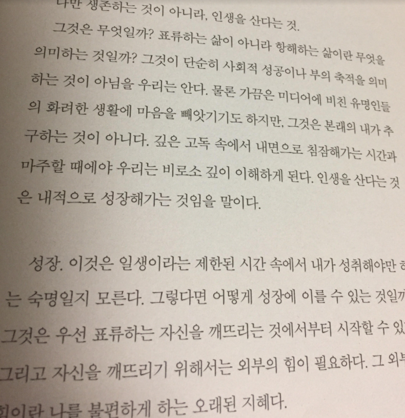
20180303
Streaming Statistics
20180302
20180301
20180228
20180226
http://blog.naver.com/PostView.nhn?blogId=tommy6753&logNo=221197078435
DStream
20180225
Mesos + Spark
https://www.slideshare.net/EugenCepoi/prez-spark-viadeohug201404091-34725261
20180224
Mesos
http://brownbears.tistory.com/261
Spark
http://bcho.tistory.com/1026
20180223
Spark
http://spark.apache.org/
Hadoop Ecosystem
https://www.quora.com/What-is-a-Hadoop-ecosystem
20180222
YARN - Yet Another Resource Negotiator
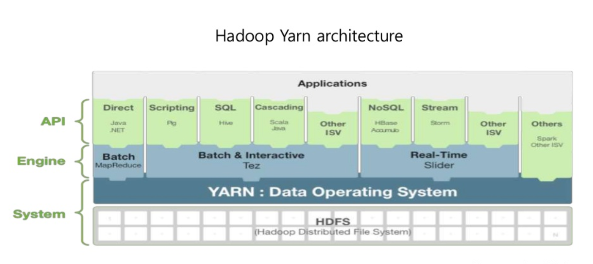
https://www.slideshare.net/KangDognhyun/apache-spark-70360736
Chaos Monkey
https://github.com/Netflix/chaosmonkey
Kafka + Spark
 https://readme.skplanet.com/?p=12465
https://nolboo.kim/blog/2016/08/02/docker-for-mac/
https://readme.skplanet.com/?p=12465
https://nolboo.kim/blog/2016/08/02/docker-for-mac/
Docker Compose
https://github.com/docker/compose
docker volume
http://pyrasis.com/book/DockerForTheReallyImpatient/Chapter06/04
romantic_euclid
Nginx On Docker
20180221
sudo -E COMMAND
sodo yum install docker
sudo service docker start
sudo chkconfig docker on
https://www.slideshare.net/pyrasis/docker-fordummies-44424016
QML
20180220
Reference
http://itmining.tistory.com/10
Redis Desktop Manager
https://redisdesktop.com/
Responding to change over following a plan
https://namu.wiki/w/%EC%95%A0%EC%9E%90%EC%9D%BC
stackoverflow
https://insights.stackoverflow.com/survey/2017
redis-stat
http://experiences.tistory.com/7
20180219
Authentication
20180218
THE BORING COMPANY
https://www.youtube.com/watch?v=rdd3OShkqYk
That would be me.
taxidermy
20180217
http://collegiatefloridian.tumblr.com/post/80344237299
20180216
Paddington2
20180215
Spring Batch Test
ItemReader
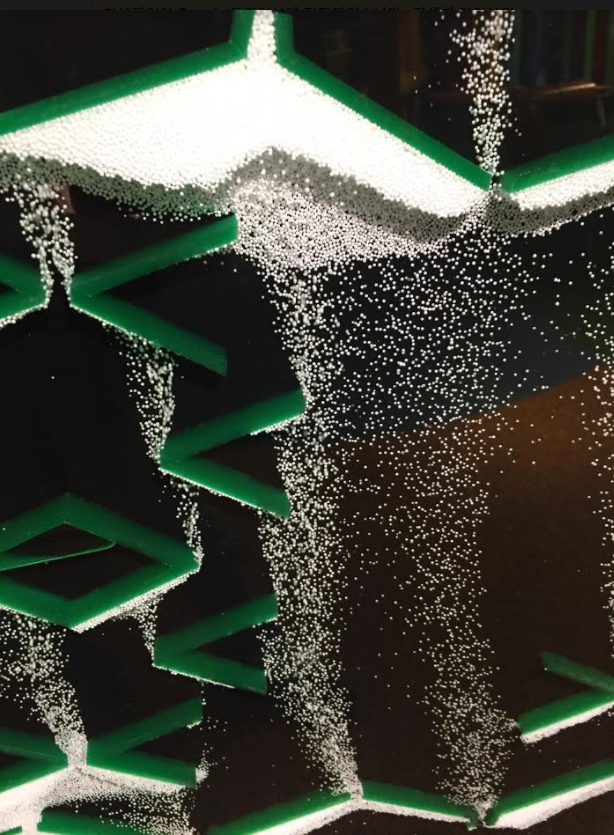
20180214
JobParameters
https://www.facebook.com/laimyuno/posts/10209548714988571
JSR-352
https://jcp.org/en/jsr/detail?id=352
20180213
BeanFactoryPostProcessor
Spring Batch
org.springframework.scheduling.quartz.SchedulerFactoryBean
org.quartz.Scheduler
org.springframework.scheduling.quartz.CronTriggerFactoryBean
org.quartz.CronTrigger
org.quartz.JobDetail
org.springframework.batch.core.Job
Job
+ execute(JobExecutionContext)
JobExecutionContext
JobDataMap
Scheduler
Trigger
JobLaucher
- JobRepository
- TaskExecutor
+ JobExecution = run(Job, JobParameters)
TaskExecutor
+ TaskExecutor = execute(Runnable)
JobRegistry
+ register(JobFactory)
+ unregister(jobName)
JobLoader
JobOperator: Job를 제어
JobExplorer: Job의 실행되었던 정보 조회
20180213
Chronos
20180212
Spring Batch
Greenplum
https://db-engines.com/en/system/Greenplum;PostgreSQL
20180211
Springwater meteorite
http://libutron.tumblr.com/post/87118203987/springwater-meteorite-the-springwater-meteorite
20180210

download
20180209
JIRA
경험하기 어려운 환경을 직접 다루어 볼 수 있는 좋은 기회이다.
20180208
uber
https://stackoverflow.com/questions/11947037/what-is-an-uber-jar/11947093#11947093
20180207
RestTemplate
20180206
--ff
20180205
Thesis, Antithesis, Synthesis
HashiCorp Vault
https://www.vaultproject.io/
Navgio(Shipwreck Beach)
https://moco-choco.com/2015/10/07/navagio-shipwreck-beach-how-the-shipwreck-became-a-shipwreck-the-story-behind-the-popular-beach-of-zakynthos/
Benagil Sea Cave, Portugal
https://www.pinterest.com/pin/390054017698307541/

20180205
Gradle
https://dkublik.github.io/gradle-build-phases/
20180204
Batch Sterotypes
https://docs.spring.io/spring-batch/1.1.x/spring-batch-docs/reference/html-single/index.html
Life
http://funsubstance.com/fun/400296/comics-mrlovenstein/
20180203
The game of life
20180202
Spring Security
java8 Date And Time
http://www.codenuclear.com/java-8-date-time-intro/
20180201
Printer
20180131
PDK
https://www.youtube.com/watch?v=nXX5VOCpA2E
20180130
performance

_.debounce
https://css-tricks.com/debouncing-throttling-explained-examples/
https://www.seatailshop.com/blogs/news/the-best-shell-beach-ever?pp=1
20180129
pattern and stream
20180128
walk and relative
20180127
JSLint

Raw String Literal

20180126
Handlebars.java page
20180125
Paper Notebook
Test create and select
20180124
https://www.pinterest.co.kr/pin/368802656979539987/
20180122
Naming Things
20180121
20180120

20180119
20180118
20180117
SPOF
20180116
회색인간
20180115
Java9 + Spring5
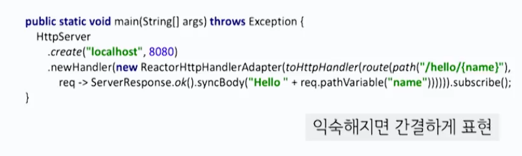
https://www.youtube.com/watch?v=BFjrmj4p3_Y
피천득 - 찬란한 시절
http://photagram.net/media/BIj7RoqhrNA
20180113
A7
https://www.youtube.com/watch?v=B7mgw5c72kA
20180112
Iconstar
showroom
20180111
closure everything!
20180109
Groovy
closure, delegate, propertyMissing
20180108
jps_stat
https://github.com/amarjeetanandsingh/jps_stat
20180107
20180106
env."${host}"
20180105
20180104
20180103
20180102
jankins-material-theme
http://afonsof.com/jenkins-material-theme/
20180101